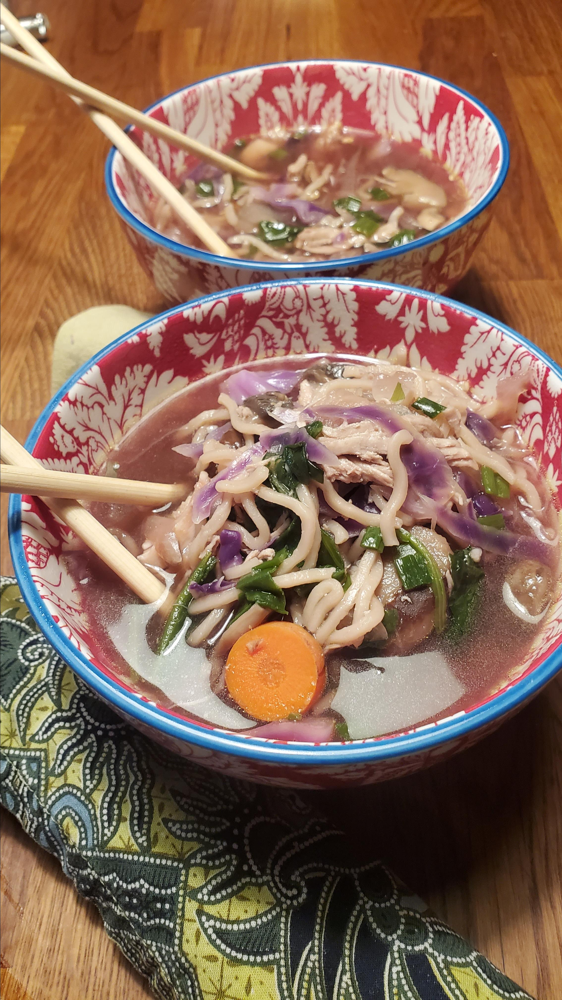

Asian Mushroom Soup Recipe

Description
Assorted mushrooms, vegetables, chicken, and noodles mingle well in this hearty and healthy soup.
Ingredients
- 4 cups fat-free, reduced-sodium chicken broth
- 3 tablespoons reduced-sodium soy sauce
- 2 teaspoons grated fresh ginger
- 3 garlic cloves, crushed
- 3 cups assorted mushrooms, sliced
- 3 cups white cabbage, cut in wedges
- 1 cup thinly sliced carrots
- 2 cups chicken breast, shredded
- 2 cups fresh udon noodles
- 1 cup thinly sliced green onions
- 2 cups shredded raw spinach or whole baby spinach leaves
- Freshly ground black pepper to taste
- 1 tablespoon mirin (sweetened rice wine) (Optional)
Steps
- In a large pot, combine broth, soy sauce, ginger, garlic, mushrooms, cabbage, carrots, and chicken. Cover and bring to a boil.
- Simmer for 5 minutes or until mushrooms are soft.
- Stir in noodles, green onions and spinach. Simmer for 2 minutes or until greens are wilted.
- Season well.
Source
Asian Mushroom Soup Recipe | Allrecipes
Return to index